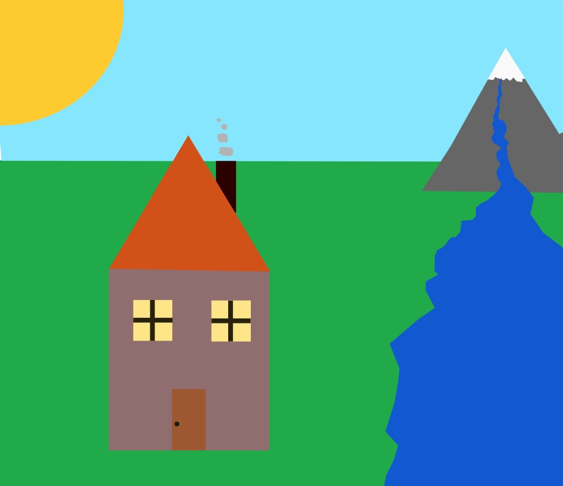

Image Editing

Vector Graphic Creation
In the image editing unit, we explored the foundations of digital art and design by learning how to manipulate layers, shapes, and color spaces. We focused on vector-style image creation to build clean graphics from the ground up, combining simple geometric elements to construct complex scenes. This hands-on process taught me how to effectively balance a visual layout, utilize depth and perspective, and select cohesive color palettes to bring digital concepts to life.

Background Creation